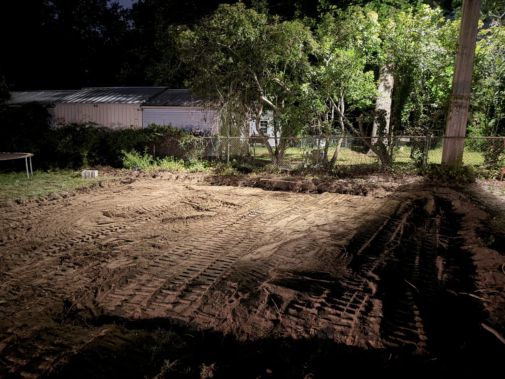

Paver patios & walkways
Plan the shape, material, edges and transitions to your existing outdoor surfaces. Base preparation and drainage are part of the project review.
Landscaping, paver patios and walkways in Greer, Greenville and Spartanburg. Plan your outdoor project with EBC Construction and request a free estimate.
Request a free estimateFrom a paver walkway to a reshaped yard, we review the layout, ground conditions and access before defining the work. Share your ideas and photos so we can plan the next step together.
Plan the shape, material, edges and transitions to your existing outdoor surfaces. Base preparation and drainage are part of the project review.
Tell us how you want to use the yard. We review outdoor improvements, the areas to restore and how the finished space connects to your home.
Yard shaping, material movement and base preparation help establish the conditions for the planned outdoor work. Site access and water flow are reviewed first.

Based in Greer, we review requests in Greenville and Spartanburg as well. Send your project location so we can confirm availability and the next step.
Explore our projectsRead customer feedbackSend photos, approximate dimensions, your location and whether you want pavers, yard improvements or both. Include any slopes, standing water or narrow access areas.
The area, selected materials, removal work, base condition, access and drainage needs all affect the scope. We review those details before preparing your estimate.
Yes. Tell us which areas you want in each material so we can review transitions, elevations and the work sequence together. Welding needs can also be included for review.
Need more than one service? Explore our concrete, landscaping and welding work, then include everything you have in mind in one estimate request.
Tell us about your projectCall (864) 450-2954